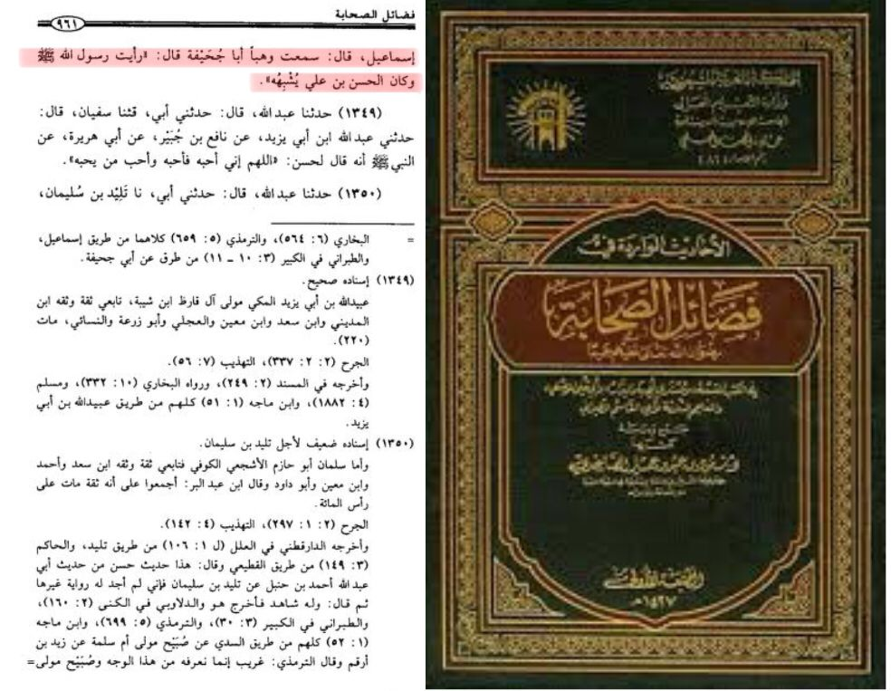
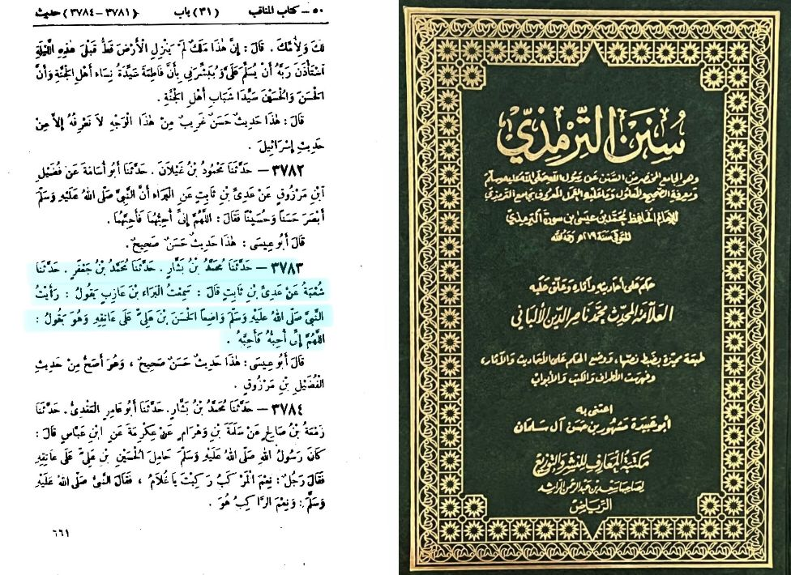
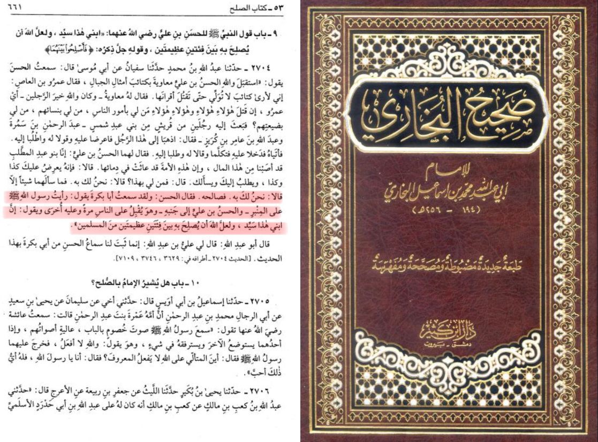

Imam Hassan ( عليه السلام) was the eldest son of Imam Ali and Lady Fatimah and the grandson of the Prophet صلى الله عليه وسلم. Born in 625 CE, Imam Hassan is the 5th caliph after his father, Abu Turab.
His brief caliphate was marked by his decision to relinquish power in favor of peace, choosing to make a treaty with Ameerul Mu'mineen Mu'awiyah to avoid further bloodshed among the Muslim community. This decision demonstrated his wisdom and commitment to preserving the unity of the ummah (Muslim community), even at the cost of his own political ambitions.
Imam Hassan's character is known for upholding the values of Islam. He was also known for his generosity and kindness, especially towards the poor and the needy. His legacy continues to inspire Muslims to strive for peace, justice, and unity.
Virtues of Imam Hassan عليه السلام

It was narrated by Abu Juhaifa, that Imam Hassan resembled the appearance of Rasoolallahﷺ
Fadhail As Sahabah by Imam Ahmad Bin Hanbal #1348

It was narrated by Al-Bara bin 'Azib:
"I saw the Prophet (ﷺ) placing Al-Hasan bin 'Ali upon his shoulder while saying: 'O Allah, I love him, so love him.'"
Sunan At Timidhee #3783

Al-Hasan Al-Basri said: I heard Abu Bakr saying, "I saw Allah's Messenger (ﷺ) on the pulpit and Al-Hasan bin `Ali was by his side. The Prophet (ﷺ) was looking once at the people and once at Al-Hasan bin `Ali saying, 'This son of mine is a Saiyid (i.e. a noble) and may Allah make peace between two big groups of Muslims through him."
Saheeh Al Bukharee #2704